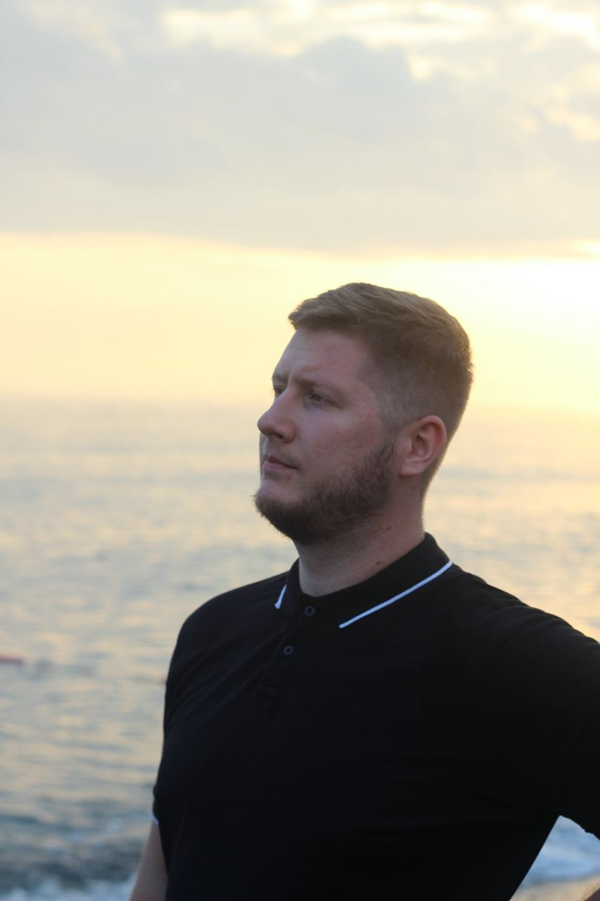

01↗
портфолио / 2026
беру 1–2 проекта в месяц
Александр · сайты и digital-системы
Сайты,
которые
двигают бизнес.
Собираю сильную подачу, понятный путь к заявке и нужные инструменты вокруг неё — чтобы сайт был не витриной, а частью продаж.
+
+

создаюсмысл
в движении
в движении
AI×DESIGN×CODE
51°32′ N / 46°02′ E
A / 01
scroll to explore↓
10+готовых
проектов
проектов
3–14дней до
первого релиза
первого релиза
∞идей вокруг
вашей задачи
вашей задачи
лендинги✳сайты услуг✳e-commerce✳AI-инструменты✳автоматизации✳
лендинги✳сайты услуг✳e-commerce✳AI-инструменты✳автоматизации✳
01 / ПОРТФОЛИО
Проекты, которые
уже работают.
Здесь можно не только посмотреть на картинку. Откройте любой кейс — каждый сайт загружается прямо внутри портфолио.
live previews02↗
03↗
04↗
05↗
06↗
07↗
08↗
AION
09↗
10↗
В этой категории пока нет проектов.
10 проектов · 8 индустрий · один подходНужен сайт под вашу нишу? ↗
02 / ЧТО ДЕЛАЮ
Сайт — это
только начало.
Сначала собираем понятную точку входа. Потом добавляем всё, что снимает ручную работу и помогает бизнесу не терять людей.
если можно убрать два ручных шага — уберём↓
03 / ПОДХОД
Быстро — не значит
поверхностно.
Современные инструменты ускоряют рутину. Время, которое они освобождают, я трачу на идею, детали и проверку того, что действительно важно для вашего бизнеса.
MADE WITHcuriosityAND CARE
A / 2026
лично веду проект от первой идеи до запуска
Собираю не просто страницу.
Собираю следующий шаг.
Использую AI-инструменты как ускоритель: быстро перебираю направления, тестирую гипотезы и собираю рабочие интерфейсы. Решения, тон и ответственность остаются человеческими — моими и вашими.
01Разобратьсяцели, аудитория, характер бренда
02Собратьструктура, тексты, дизайн, код
03Проверитьмобильный UX, формы, сценарии
04Запуститьпубликация и понятная передача
04 / СТАРТ
Расскажите,
что нужно
сдвинуть.
Опишите задачу в двух словах — я вернусь с вопросами, идеей первого шага и честной оценкой сроков.
ответ в течение 1 рабочего дня↘